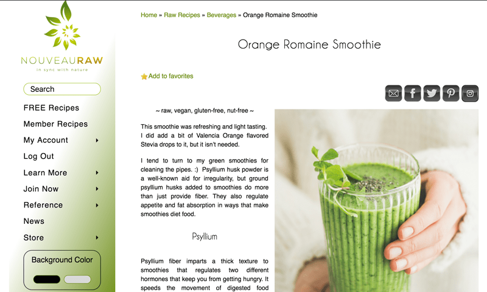
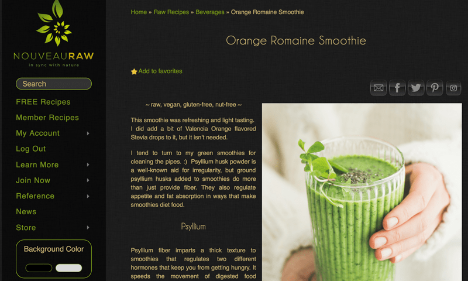

#5 – You Can Change Site Colors for Readability
This feature has to be one of my favorites that we added to the site. Initially, I started Nouveauraw with a black background, which I love (d), but throughout time I’ve had a handful of people reach out to me stating that they couldn’t read off of black backgrounds. So, we created the site with both a black and white background. I ran a poll in our members Facebook group to see what color people liked best. I got an overwhelming response that they loved the original black background. BUT I couldn’t just ignore those who couldn’t enjoy the site due to a coloring technicality. After much research, my darling husband was able to add a feature that allowed people to change the background from black to white.
Below, I posted screenshots showing the white background and the black background.

Here it is with the white background.

And with the click of the button… here is the black background. Pretty slick huh?!
So, with just ONE click of the button, you can toggle back and forth between either a white or black background (all font colors automatically shift as well according to which color is selected). I love both options and find myself always switching the color theme. I tend to choose white during the day because it feels energetic. I change it to black in the evening or for those days that I feel more snuggly because it feels more relaxing.
Look for the Background Color button at the bottom of the left sidebar menu. Check it out and see what works best for you! Let me know, I would to hear your thoughts. blessings, amie sue
© AmieSue.com